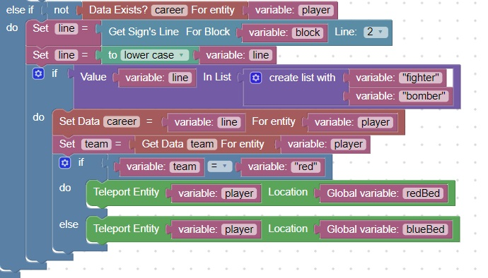
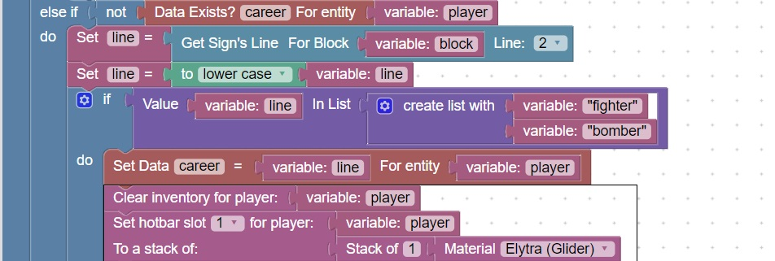
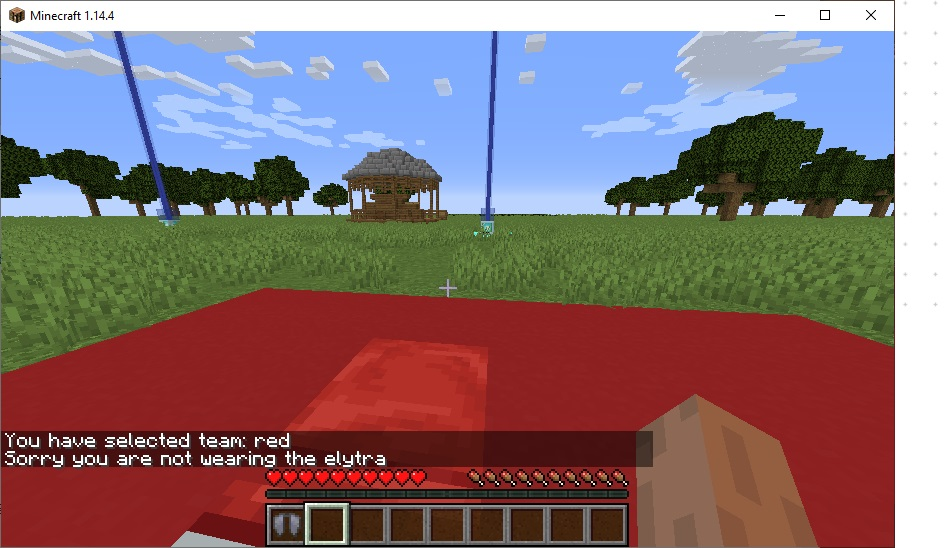

Clear Inventory, Give Elytra
Where the player chooses a career
Their inventory should be cleared and an elytra should be given to them
Look at the player-click event, and locate where the career is being chosen

Next, clear their inventory and place an elytra in their hotbar (position 1)
You can use this code as a reference:

After selecting a career, you should see
